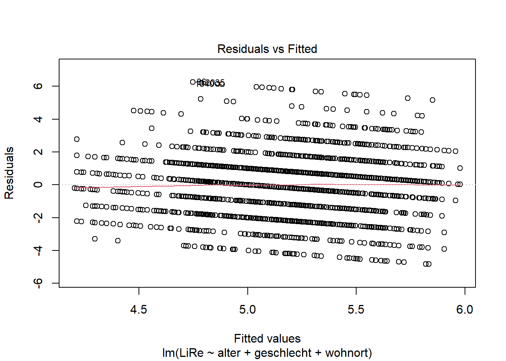
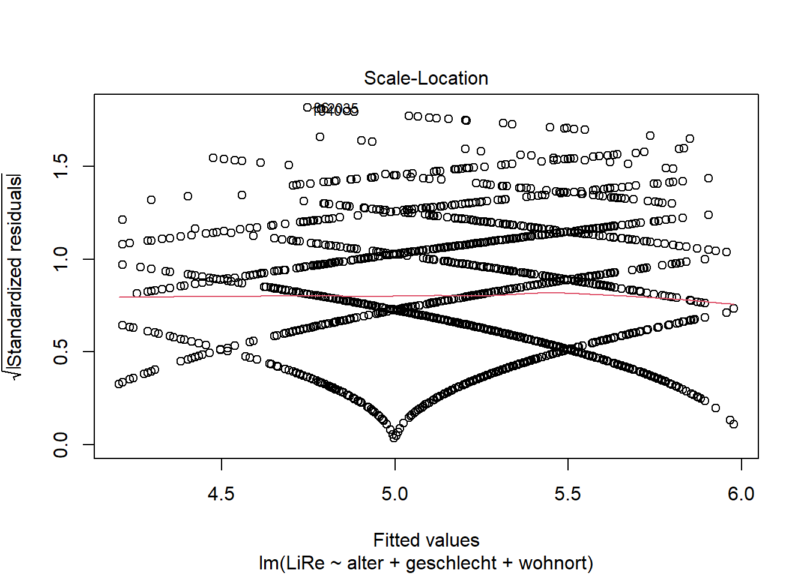
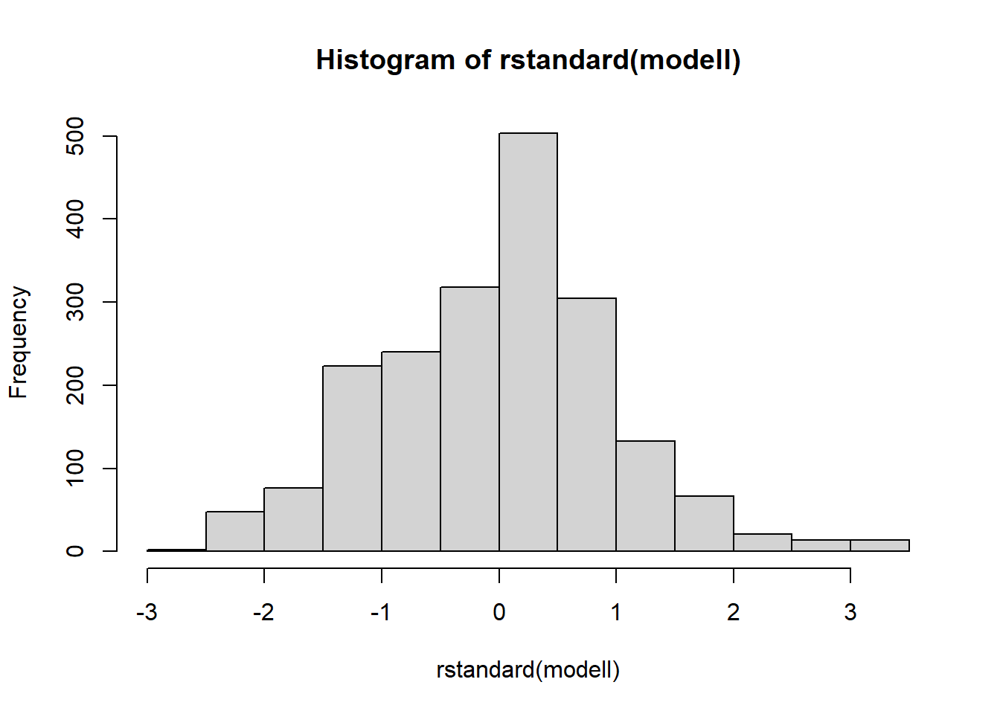

Nachdem wir in der letzten Sitzung ein multiples lineares Regressionsmodell gerechnet haben, wollen wir in dieser Sitzung die Anwendungsvoraussetzungen für dieses Modell prüfen. Darunter sind Voraussetzungen zu verstehen, „die (in ausreichender Weise) erfüllt sein sollen, damit die Regressionsanalyse valide Resultate liefern kann“ (Diaz-Bone 2019: 202). Es können auch Maßnahmen zur Verbesserung der Anwendungsvoraussetzung getroffen werden, die wir ebenfalls in dieser Sitzung kennenlernen werden.
getwd()
setwd("eigener Pfad")library(foreign)
gles <- read.spss(file = "ZA6801_de_v4-0-1.sav", to.data.frame = TRUE)
lijphart <- read.csv2("Lijphart_Data_recode.csv")# GLES
# Alter
q2c_num <- as.numeric(as.character(gles$q2c))
gles$alter <- 2017 - q2c_num
# Geschlecht
names(gles)[names(gles) == "q1"] <- "geschlecht"
# Einkommen kategorial
gles$einkommen_cat[gles$q192 == "unter 500 Euro" |
gles$q192 == "500 bis unter 750 Euro" |
gles$q192 == "750 bis unter 1000 Euro"] <- "weniger als 1000"
gles$einkommen_cat[gles$q192 == "1000 bis unter 1250 Euro" |
gles$q192 == "1250 bis unter 1500 Euro" |
gles$q192 == "1500 bis unter 2000 Euro"] <- "1000 bis 1999"
gles$einkommen_cat[gles$q192 == "2000 bis unter 2500 Euro" |
gles$q192 == "2500 bis unter 3000 Euro"] <- "2000 bis 2999"
gles$einkommen_cat[gles$q192 == "3000 bis unter 4000 Euro"] <- "3000 bis 3999"
gles$einkommen_cat[gles$q192 == "4000 bis unter 5000 Euro"] <- "4000 bis 4999"
gles$einkommen_cat[gles$q192 == "5000 bis unter 7500 Euro"] <- "5000 bis 7499"
gles$einkommen_cat[gles$q192 == "7500 bis unter 10000 Euro" |
gles$q192 == "10000 Euro und mehr"] <- "7500 und mehr"
gles$einkommen_cat <- factor(gles$einkommen_cat,
levels = c("weniger als 1000",
"1000 bis 1999",
"2000 bis 2999",
"3000 bis 3999",
"4000 bis 4999",
"5000 bis 7499",
"7500 und mehr"))
# Einkommen numerisch
gles$einkommen_num[gles$einkommen_cat == "weniger als 1000"] <- 1
gles$einkommen_num[gles$einkommen_cat == "1000 bis 1999"] <- 2
gles$einkommen_num[gles$einkommen_cat == "2000 bis 2999"] <- 3
gles$einkommen_num[gles$einkommen_cat == "3000 bis 3999"] <- 4
gles$einkommen_num[gles$einkommen_cat == "4000 bis 4999"] <- 5
gles$einkommen_num[gles$einkommen_cat == "5000 bis 7499"] <- 6
gles$einkommen_num[gles$einkommen_cat == "7500 und mehr"] <- 7
# Wohnort
gles$wohnort[gles$q197 == "Grossstadt"] <- "Großstadt"
gles$wohnort[gles$q197 == "kleine oder mittelgrosse Stadt"] <- "Kleinstadt"
gles$wohnort[gles$q197 == "laendliche Gegend oder Dorf"] <- "Land"
gles$wohnort[gles$q197 == "Vorstadt/ Vorort einer Grossstadt"] <- "Vorstadt"
# Links-Rechts-Selbsteinstufung
gles$LiRe <- as.character(gles$q32)
gles$LiRe[gles$LiRe == "1 links"] <- "1"
gles$LiRe[gles$LiRe == "11 rechts"] <- "11"
gles$LiRe <- as.numeric(gles$LiRe)
# Links-Rechts-Selbsteinstufung aggregiert
gles$LiRe_cat[gles$LiRe >= 1 &
gles$LiRe <= 2] <- "links"
gles$LiRe_cat[gles$LiRe >= 3 &
gles$LiRe <= 4] <- "moderat links"
gles$LiRe_cat[gles$LiRe >= 5 &
gles$LiRe <= 7] <- "mittig"
gles$LiRe_cat[gles$LiRe >= 8 &
gles$LiRe <= 9] <- "moderat rechts"
gles$LiRe_cat[gles$LiRe >= 10 &
gles$LiRe <= 11] <- "rechts"
gles$LiRe_cat <- factor(gles$LiRe_cat,
levels = c("links",
"moderat links",
"mittig",
"moderat rechts",
"rechts"))
# AfD-Wahl
gles$AfD.Wahl[gles$q19ba == "AfD"] <- 1
gles$AfD.Wahl[gles$q19ba != "AfD"] <- 0modell <- lm(LiRe ~ alter + geschlecht + wohnort, data = gles)Lineare Regressionen unterstellen bestimmte Annahmen über die Daten, zu deren Analyse sie verwendet werden. Diese Annahmen werden in der Regressionsdiagnostik im Anschluss an die Regressionsanalyse geprüft. Dabei stützt sich die Diagnostik größtenteils auf grafische Auswertungen und ist damit bis zu einem gewissen Grad subjektiv. Die Anwendungsvoraussetzungen der linearen Regression bedingen sich teilweise gegenseitig.
Die multiple lineare Regression unterstellt einen linearen
Zusammenhang zwischen den unabhängigen Variablen und der abhängigen
Variable. In R besteht der effizienteste Weg zur Prüfung
der Linearität darin, die Residuen gegen die Vorhersagewerte zu plotten.
Da dies der erste Diagnostikplot ist, fügen wir im Input der Funktion
eine Eins an.
plot(modell, 1)
Durch den Plot wird von R eine rote Linie gezogen, die
zur Bewertung der Linearität dient. Ist diese Linie gerade, liegt
Linearität vor. Wenn die Linie allerdings Knicke oder eine Steigung
aufweist, können wir eine Verletzung der Linearitätsannahme nicht
ausschließen. In unserem Beispiel ist kein Muster zu erkennen, wir
können also von einer Linearität des Zusammenhangs ausgehen, sodass ein
lineares Regressionsmodell angemessen ist.
Bei der Multikollinearitätsannahme wird geprüft, ob die unabhängigen
Variablen untereinander unabhängig voneinander sind. In unserem Beispiel
wäre es vorstellbar, dass Alter und Wohnort zusammenhängen. In der
Forschungspraxis wird diese Annahme oft mithilfe des Variance Inflation
Factor (VIF) geprüft, indem wir die Funktion vif() aus dem
Paket car verwenden. Wenn keine Multikollinearität
vorliegt, liegt der VIF bei Eins (Kühnel/Krebs 2014: 539). In unserem
Modell liegt der VIF-Wert für alle unabhängigen Variablen nahe Eins, wir
können das Vorliegen problematischer Multikollinearität also verneinen,
weil nur extreme Abweichung dagegensprechen. Seltener zur Prüfung der
Multikollinearität ist die Verwendung der Toleranz mit [0, 1]. Dabei
gelten Werte kleiner 0.1 und größer 0.9 als problematisch.
#install.packages("car")
library(car)
vif(modell)| GVIF | Df | GVIF^(1/(2*Df)) | |
|---|---|---|---|
| alter | 1.003915 | 1 | 1.001956 |
| geschlecht | 1.001405 | 1 | 1.000702 |
| wohnort | 1.002838 | 3 | 1.000473 |
Ein Regressionsmodell soll eine „einheitliche Vorhersageleistung über alle Größenordnungen von \(\hat{y}_i\).̂ hinweg“ (Diaz-Bone 2019: 208) treffen. Bei Heteroskedastizität hängen die Residuen mit der Größenordnung von \(\hat{y}_i\).̂ zusammen, was im Plot beispielsweise durch eine zu einer Seite geöffnete Trichterform zu erkennen wäre. Die Annahme der Homoskedastizität prüfen wir mit einem ähnlichen Plot wie dem für die Linearität verwendeten Residuals vs. Fitted-Plot. Diesmal wird aber die Wurzel der standardisierten Residuen gegen die Vorhersagewerte geplottet.
plot(modell, 3)
Auch durch diesen Plot wird von R eine rote Linie
gezogen, die uns hier zur Bewertung der Varianzhomogenität dient. Wenn
die Linie Knicke oder eine Steigung aufweist, können wir
Heteroskedastizität nicht ausschließen. In unserem Beispiel ist die
Annahme der Homoskedastizität erfüllt. In Abschnitt 5 zeigen wir
Möglichkeiten zum Umgang mit Verletzungen der Homoskedastizitätsannahme
umzugehen.
Um valide inferenzstatische Aussagen auf Basis eines Modells treffen
zu können, müssen die Residuen normalverteilt sein. Wir verwenden zur
Prüfung der Annahme die standardisierten Residuen. Diese lassen wir uns
mithilfe des Befehls rstandard() ausgeben. Der Output in
der Konsole ist unübersichtlich, wird aber auch nicht benötigt.
Stattdessen plotten wir die standardisierten Residuen mit
hist(rstandard()) als Histogramm. Für unser Modell lautet
der Befehl also:
head(rstandard(modell))## 1 2 4 5 6 7
## 1.2477077 -0.2685221 0.6476435 0.1669586 -0.8229933 -1.2053387hist(rstandard(modell))
Das Histogramm zeigt eine annähernde Normalverteilung für die standardisierten Residuen, sodass die Annahme der Normalverteilung der Residuen nicht verletzt ist. Sind die Residuen nicht normalverteilt, ist die Transformation der abhängigen Variablen, die in Abschnitt 5 genau erklärt wird, die gängigste Möglichkeit, die Verteilung der Residuen näher an eine Normalverteilung anzupassen.
Für die Regressionsgleichung war unsere Grundannahme bisher, dass sie nur additive Terme enthält, die also unabhängig voneinander sind. Wenn wir vermuten, dass der Effekt einer Variable durch eine andere Variable beeinflusst wird, berechnen wir interagierende Terme. Diese ergeben sich durch Multiplikation der zu interagierenden Variablen. Das Produkt wird als zusätzlicher Term (Interaktionsterm) in die Regressionsgleichung einge-führt, der sich wie eine eigene Variable mit eigenem (konditionalem) Regressionskoeffizienten verhält.
\(y_i=b_0+b_1 * x_{1i}+b_2*x_{2i}+b_3*x_{3_i} * x_{3_i}+e_i\).
Die konditionellen Regressionskoeffizienten sind von der Ausprägung der anderen Variablen abhängig, sodass keine Vergleichsaussagen möglich sind. Durch Interaktionsterme nimmt i.d.R. die Multikollinearität zu. Durch Mittelwertzentrierung der zu interagierenden Variablen vor Berechnung der Interaktionen nimmt sie ab. Um den Interaktionseffekt mit einer Variable zu messen, wird auf Basis der zu interagierenden Variablen eine neue Variable gebildet, z.B.:
interaktion <- gles$alter * gles$einkommen_numDabei ist wichtig, dass der Datensatz angegeben wird, aus dem die Variablen stammen. Die neu erstellte Variable kann im Befehl für das Regressionsmodell eingefügt werden.
Es können Maßnahmen zur Verbesserung der Anwendungsvoraussetzung getroffen werden. Wenn wir solche Maßnahmen treffen, sollten wir im Anschluss nochmal alle Anwendungsvoraussetzungen prüfen.
Wenn kontinuierliche Variablen vorliegen, die nicht linear mit der abhängigen Variablen zusammenhängen, können diese transformiert werden. Im Rahmen der Prüfung der Anwendungsvoraussetzungen multipler linearer Regressionsmodelle kann eine Variable transformiert werden, um die Beziehung zu linearisieren. Bei nicht-normalverteilen Residuen, kann es ebenfalls Sinn ergeben, Variablen zu transformieren. Allerdings können auch theoretische Überlegungen dazu führen, eine Variable zu transformieren. In einem Beispiel mit Zählvariablen (s. Sitzung 11) seien die Monate vor der Bundestagswahl die unabhängige Variable. In diesem Kontext könnte es sinnvoll sein, die unabhängige Variable zu transformieren, da das Verhalten von Abgeordneten (abhängige Variable) 32-33 Monate zu 2-3 Monaten vor der Wahl mathematisch zwar analog ist, inhaltlich aber nicht. Da die Interpretation der Daten auf der ursprünglichen Skala am leichtesten ist und durch Transformation tendenziell schwieriger wird, sollte eine Transformation gut überlegt sein.
Typische Transformationen sind Logarithmen und Potenzen, z.B. log(x),
\(e^x\) oder \(x^2\). Anhand der Variable alter aus dem
gles-Datensatz können wir beispielhaft eine
Variablentransformation durchführen und das Alter logarithmieren. Dafür
definieren wir ein Objekt, in dem wir die neue logarithmierte Variable
speichern und setzen dafür ein log vor die Ursprungsvariable.
log_alter <- log(gles$alter)Wie finde ich eine geeignete Transformationsfunktion? Jede Transformation hat ihre eigenen Eigenschaften, die unterschiedlich gut zu Ihren Daten passen. Daher probieren Sie am besten verschiedene Transformationen aus und beobachten, wie diese Ihre Daten beeinflussen. Dafür können Sie die Anwendungsvoraussetzen mit transformierter Variable erneut prüfen.
Die einfachste Lösung zum Umgang mit Multikollinearität ist das Auslassen einer oder mehrerer stark miteinander korrelierender unabhängiger Variablen aus dem Modell. Die inhaltliche Überprüfung nach Entdeckung einer hohen Multikollinearität ergibt oft, dass man zwei redundante Messinstrumente hat, d.h. dass ein Effekt bereits durch eine andere unabhängige Variable gemessen wird. Eine alternative Möglichkeit ist die Zusammenfassung von mehreren unabhängigen Variablen zu einem Index, der dann als eine unabhängige Variable ins Modell eingeführt wird, sodass die inhaltliche Dimension der einen unabhängigen Variable nicht vollständig verloren geht.
Falls Heteroskedastizität vorliegt, hat das Folgen für die berechneten Standardfehler der Regressionskoeffizien-ten und somit auch auf die t- und p-Werte, die mithilfe des Standardfehlers der Regressionskoeffizienten berechnet werden. Es gibt verschiedene Möglichkeiten, um mit Heteroskedastizität umzugehen, beispielsweise offensichtlich fehlende Variablen ins Modell aufzunehmen. Allerdings ist es nicht trivial, welche Variable fehlt. Außerdem wäre es möglich, nichtlineare Beziehungen zwischen der abhängigen und den unabhängigen Variablen zu berücksichtigen, mögliche Interaktionen zwischen den unabhängigen Variablen zu berücksichtigen oder Y zu transformieren.